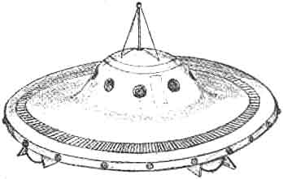

Dessin par un mécanicien inconnu d'un ovni qu'il aurait vu survoler une piste de la base de la base d'Holloman, pendant l'Eté

"Necoma", un être prétendument de Jupiter, avertit les américains canal de radio-amateur qu'ils doivent arrêter
leurs essais de bombe à hydrogène et atomique parce qu'ils finiront par faire exploser le système solaire tout
entier Kottmeyer, Martin S.: "Still
Waiting: A List of Predictions from the 'UFO Culture'", The Anomalist, 1998.
À Udine (Italie), une ville du nord-est de l'Italie située
dans la région Frioul-Vénétie Julienne, des aviateurs observent un appareil inconnu possédant la régularité d'un
métronome. Pendant 12 jours, cet objet survolera la région à heure fixe (tous les jours à ). Les
militaires italiens ont pu grâce à cela tirer des clichés. C'est comme si l'engin effectuait des relevés
topographiques minutieux. Toujours à 500 m du sol et tous les soirs au rendez-vous !, dit un pilote. La
vitesse maximum enregistrée par les radars de la base d'Udine est proprement ahurissante : 16000 km/h.
À Warren (Michigan), observation Cas Blue
Book n° 5999 non résolu.